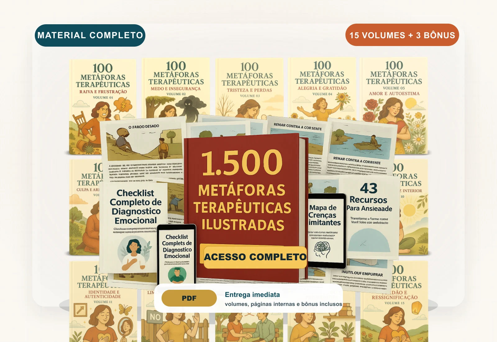
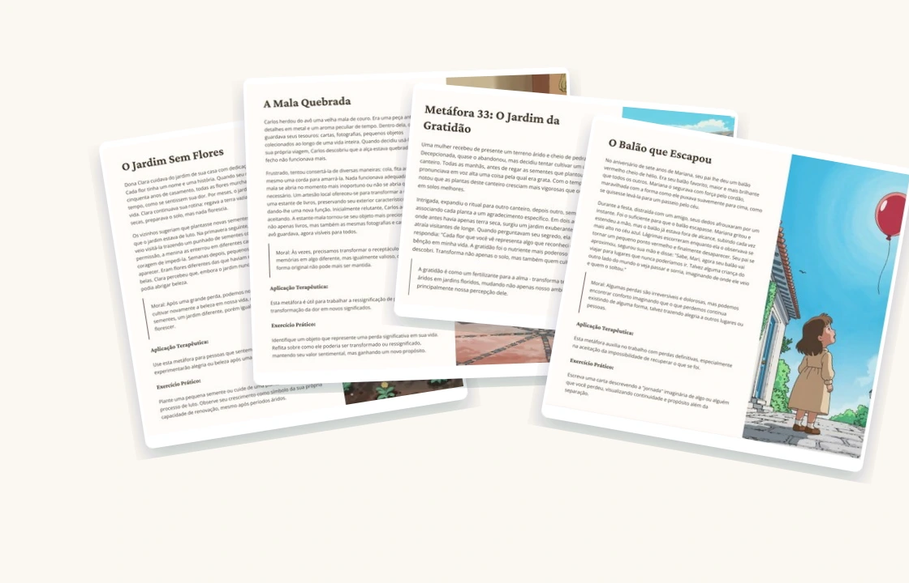
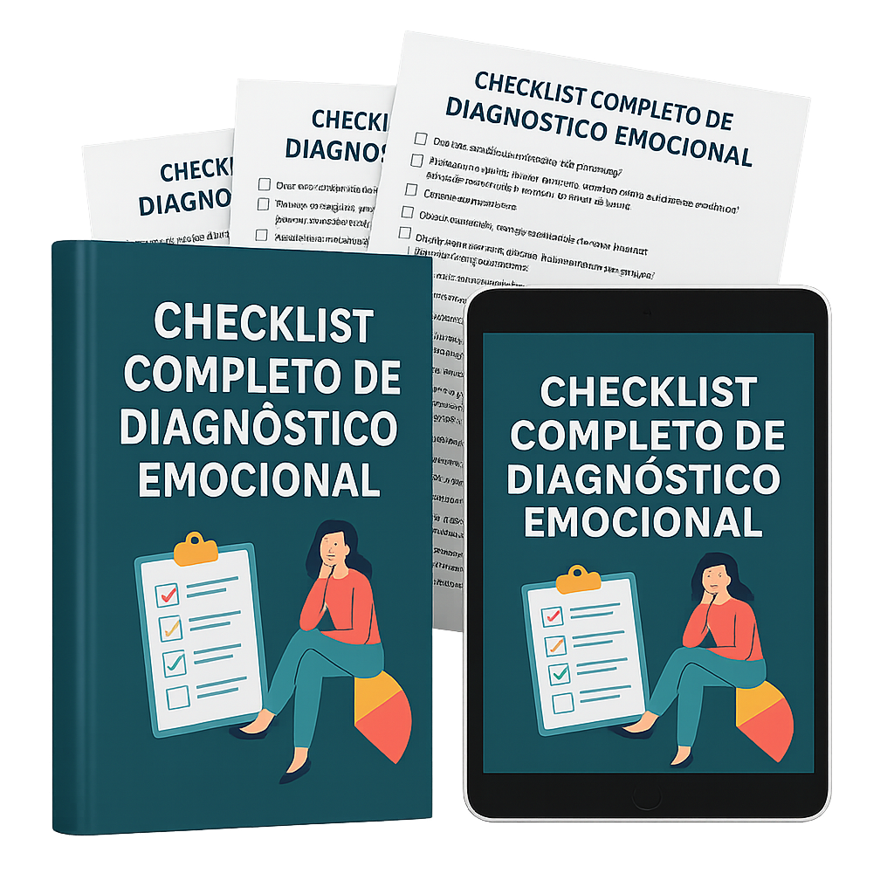
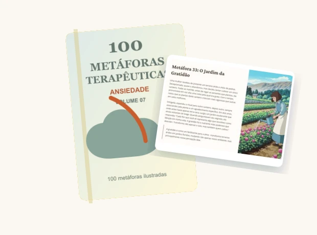
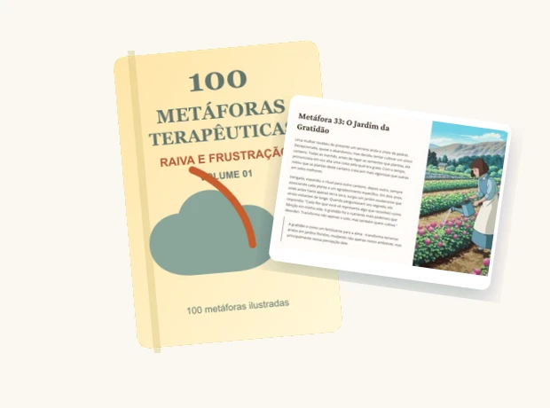

15 tomów według emocji
Lęk, złość, smutek, poczucie własnej wartości, granice i inne.
Zrewolucjonizuj swoje podejście terapeutyczne dzięki potężnym metaforom, które upraszczają złożone koncepcje i budzą głębokie zrozumienie emocji. To narzędzie stanie się Twoim codziennym wsparciem w pracy z pacjentem.
Otrzymujesz 15 plików PDF z 1.500 ilustrowanymi metaforami, podzielonymi na tematy emocjonalne oraz 3 praktyczne bonusy.

Lęk, złość, smutek, poczucie własnej wartości, granice i inne.

Historia, ilustracja, morał i ćwiczenie na jednej karcie.

Dodatkowe narzędzia do diagnozy i pracy z przekonaniami.
Nie musisz improwizować opowieści. Materiał zawiera gotowe pomosty: obraz, narrację i ćwiczenie.

Wybierz tom odpowiadający emocji: lęk, złość, poczucie winy lub relacje.
Historia i obraz pomagają pacjentowi zwizualizować wzorzec emocjonalny.

Użyj morału i ćwiczenia, aby zamienić wgląd w konkretne działanie.
Kwestionariusz do identyfikacji wzorców na pierwszej sesji.
Wizualny schemat najczęstszych przekonań ograniczających.
Zbiór skryptów i technik gotowych do pracy na sesji.
Otrzymasz bibliotekę PDF do pobrania i druku.
To 15 tomów tematycznych. Każda metafora to jedna strona z historią, ilustracją, morałem i ćwiczeniem.
Nie. Materiał jest przeznaczony dla każdego profesjonalisty pracującego nad rozwojem: terapeutów, coachów, pedagogów i mentorów.
Natychmiast po zakupie otrzymasz e-mail z linkiem do pobrania wszystkich plików PDF.